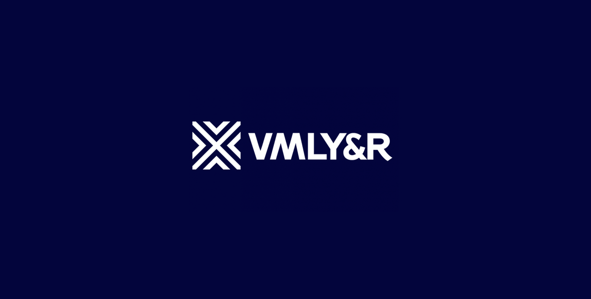
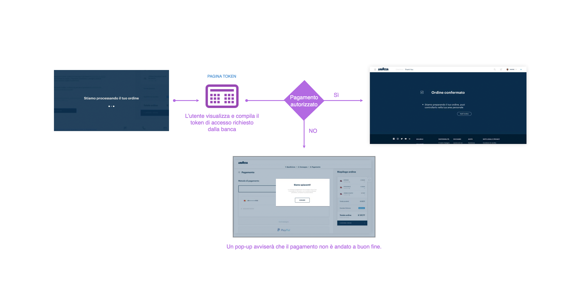
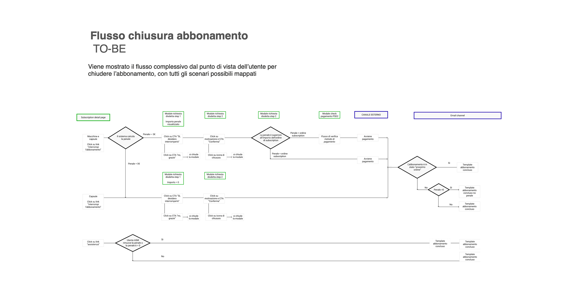

Websites, e-commerce and digital products for the agency's clients — Whirlpool, Lavazza and Bolton among them.Siti, e-commerce e prodotti digitali per i clienti dell'agenzia — tra cui Whirlpool, Lavazza e Bolton.

VMLY&R is an advertising and media company. I worked in its digital division, on clients' websites, e-commerce and digital products.VMLY&R è un'agenzia di comunicazione e media. Lavoravo nella divisione digital, su siti, e-commerce e prodotti digitali dei clienti.
I was product designer in a consulting team with a front-end and a back-end developer, working directly with the client's whole team — up to the owner.Ero product designer in un team di consulenza con uno sviluppatore front-end e uno back-end, a contatto diretto con tutto il team del cliente — fino al titolare.
I faced external stakeholders and coordinated designers, copywriters and external developers. Trust won the next project.Gestivo stakeholder esterni e coordinavo grafici, copywriter e sviluppatori esterni. La fiducia portava il progetto successivo.
Every artifact that kept stakeholders aligned was mine — from business needs to acceptance-test demos.Ogni artefatto per tenere allineati gli stakeholder era mio — dalla raccolta dei bisogni alle demo di collaudo.
A chance to propose and lead the redesign of internal processes and of the services the agency sells.L'occasione di proporre e guidare il redesign dei processi interni e dei servizi venduti dall'agenzia.
Projects of every size and impact, often running in parallel.Progetti di ogni dimensione e impatto, spesso in parallelo.


I redesigned several internal processes, mostly around web-platform design, and brought agile sprints into the design team. New tools came in step by step — Figma included.Ho ridisegnato diversi processi interni, soprattutto sulla progettazione di piattaforme web, e ho portato gli sprint agili nel team di design. Nuovi strumenti sono entrati passo dopo passo — Figma compreso.
A solid schedule raises quality — especially with many clients at once.Una pianificazione solida alza la qualità — soprattutto con tanti clienti insieme.
To bring in new tools, show people what they gain, not what's wrong today.Per introdurre nuovi strumenti, mostra cosa si guadagna, non cosa non va oggi.